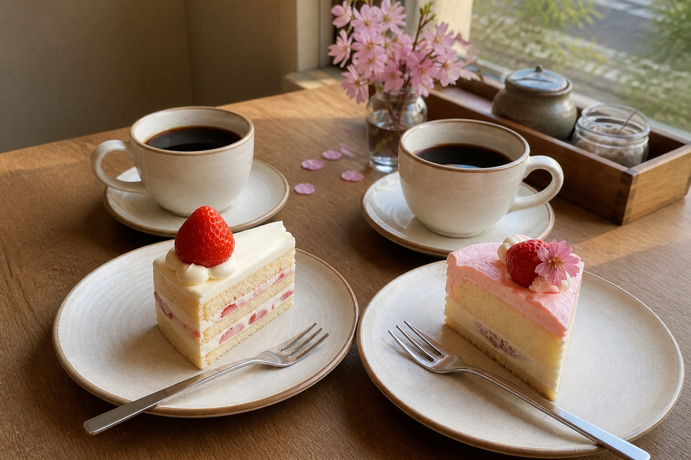

気になっていたカフェへ

前から気になっていた、窓辺の席がきれいなカフェへ行ってきました。
休日は混むと聞いていたので少し早めに出発。ちょうど窓際の席が空いていて、外を歩く人や揺れる木の葉を眺めながら、ゆっくり過ごすことができました。
私は白い苺のショートケーキ、Mくんは淡いピンク色の苺ケーキ。それぞれブラックコーヒーも注文しました。どちらにするか迷っていたら、「違うものを頼めば両方食べられる」と言ってくれたので、一口ずつ交換しました。
白いほうは苺の酸味と軽いクリームがちょうどよくて、ピンクのほうは苺の香りがもっと濃く感じられる味。Mくんは白いショートケーキ、私はピンクのケーキのほうが少し好みでした。自分で選んだものと逆になったのがおかしくて、二人で笑いました。

食べながら話したのは、次の休みにどこへ行きたいかということ。私は海の見える場所、Mくんは静かに過ごせる温泉がいいと言っていて、なかなか決まりませんでした。こういう時間も楽しいので、行き先はもう少し迷っておこうと思います。
仕事の話も少し。忙しいと連絡が短くなってしまうことを気にしていたみたいだけど、会ったときにちゃんと話せるなら、それで大丈夫だよと伝えました。
写真を撮ろうとしたら、Mくんは今日もカメラの外へ。「ケーキなら撮っていいよ」と、お皿だけこちらに寄せてくれました。相変わらず写真は苦手みたいです。
今度はランチも食べてみたいな。また二人で来られますように。
— HANA